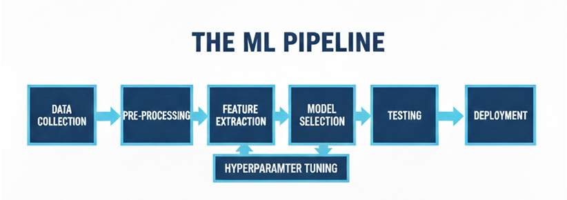
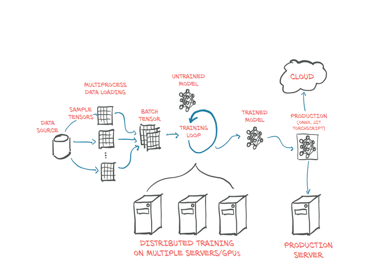
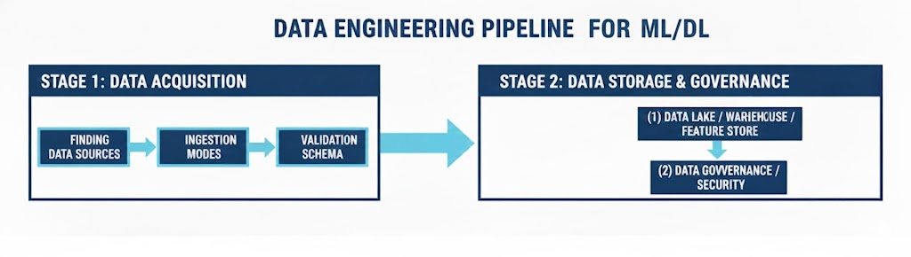

AI (Artificial Intelligence) is one of the most important and fastest-growing fields of technology today. Applications of AI are becoming ubiquitous, and solutions learned from data are increasingly displacing traditional hand-crafted algorithms. Machine Learning (ML) and Deep Learning (DL) are major branches of artificial intelligence (AI) that provide systems with the ability to automatically learn and improve from experience without being explicitly programmed.
This tutorial explores the fundamental theory and practical engineering of various Machine Learning and Deep Learning models, including classic algorithms like SVM, Decision Trees, and Naive Bayes, as well as advanced architectures such as Convolutional Neural Networks (CNN), Recurrent Neural Networks (RNN), and Transformers. We will also demonstrate how to train and apply these models across diverse real-world applications.
Serving as the major foundational tool, Statistics underpins the entire scope of this tutorial.
Both Machine Learning and Deep Learning follow a pipeline structure to create and deploy AI-based systems. The pipeline commonly has the following form:

ML Pipeline Flow
Note: the diagram above labels this stage "Model Selection" and includes a separate "Hyperparameter Tuning" step feeding into it. Hyperparameter tuning is now covered under "Model Training" below; model selection (choosing among candidate algorithms) is related but still a distinct topic not yet covered in detail here.

An example pipeline based on Neural Network for Image Recognition
The ML Pipeline
Data Ingestion: Gathering and loading data from various sources (databases, APIs, files).
Preprocessing: Cleaning the data, handling missing values, and dealing with inconsistencies.
Feature Engineering: Transforming raw data into features that better represent the underlying problem to the predictive models.
Model Training: Feeding the prepared data to the chosen algorithm to learn patterns.
Evaluation: Testing the model's performance on unseen data to ensure accuracy and robustness.
Deployment: Integrating the model into a live environment where it can make real-time predictions.
Data Ingestion
Progress in the last decade shows that the success of an ML system depends largely on the data it was trained on. Instead of focusing on improving ML algorithms, most companies focus on managing and improving their data. The first three blocks of the pipeline—Data Ingestion, Data Preprocessing, and Feature Engineering—form the data preparation layer. These blocks are somewhat interchangeable; in certain cases, Feature Engineering happens at the time of Data collection (Ingestion) itself.
Data Ingestion, the first stage of the ML pipeline, involves a structured process of acquiring raw data and preparing its storage environment. This sub-pipeline ensures data is collected reliably and organized efficiently for subsequent processing.

Data Ingestion Sub-Pipeline (Acquisition and Storage Stages)
Note: this diagram matches the text well. Minor fix needed at the image source: "WARIEHOUSE" should read "WAREHOUSE".
The Data Engineering Sub-Pipeline for ML/DL
The Data Engineering pipeline is responsible for transforming raw, disparate data into the clean, reliable, and accessible features required for model training and inference. It generally follows a structured ETL or ELT pattern.
Stage 1: Data Acquisition & Ingestion (The "Extract" Phase)
This initial stage focuses on finding, collecting, and moving raw data from various sources into a central landing zone.
External Sources: Third-party APIs, public datasets, web scraping.
Specific Data Types: Sources for unstructured data like images/video (e.g., ImageNet, COCO) or proprietary camera feeds.
How LLM Engines Gather Data
Large Language Models present a distinct data acquisition problem: instead of a bounded, labeled dataset for one task, they need an enormous, broad-coverage sample of text (and increasingly images, audio, and code) to learn general language and reasoning patterns from. Typical sources include:
Web Crawls: Large-scale scrapes of the public internet (e.g., Common Crawl) form the bulk of pre-training data, filtered and deduplicated to remove low-quality or repeated pages.
Curated Corpora: Higher-quality, structured sources such as Wikipedia, digitized books, academic papers, and reference sites, which are over-represented relative to their size on the web because of their quality.
Code Repositories: Public code hosting platforms (e.g., GitHub), used to train coding ability and often filtered by license type.
Licensed & Partnered Data: Content obtained through direct licensing agreements with publishers, news organizations, or platforms, rather than open scraping.
Human-Generated Data: Instruction–response pairs, conversations, and preference judgments collected from human annotators, used to fine-tune the base model's behavior (e.g., for instruction-following or safety).
Synthetic Data: Text generated by existing models, used to augment coverage of specific skills (e.g., math reasoning, tool use) that are underrepresented in naturally occurring text.
Because of the scale and provenance involved, LLM data pipelines place heavy emphasis on filtering (removing toxic, low-quality, or duplicate content), deduplication, and licensing/copyright review — concerns that are far less central when gathering a small, task-specific structured dataset.
2. Ingestion Modes
Batch Ingestion: Processing large volumes at scheduled intervals (e.g., nightly jobs).
As data enters the pipeline, basic validation ensures the data type and format conform to the expected schema.
Stage 2: Data Storage & Governance (The "Load" Phase)
This stage determines where the raw and processed data resides, optimized for both cost and query performance.
1. Storage Solutions
Data Lake: Stores raw, uncleaned, unstructured data (S3, GCS).
Data Warehouse: Stores structured, cleaned data optimized for analytical querying.
Feature Store: Stores curated feature vectors for consistent batch training and real-time inference.
2. Data Governance and Security
Implementing access controls, encryption, and tracking data lineage.
Data Pre-processing
Data pre-processing is the critical stage that cleans, transforms, and prepares the raw data. It consists of Data cleaning, Data Transformation, and Data Reduction. These steps are iterative and dependent on the learning application.
Note: the diagram above frames pre-processing as a 6-step operational cycle, which emphasizes different steps (e.g. Extract/Merge Data) than the four categories below and doesn't show Data Reduction or Imbalanced Data handling. The two views are complementary — the cycle above is closer to a step-by-step workflow, while the categories below group those same kinds of tasks conceptually. Roughly: Remove Inconsistent Data + Rebuild Missing Data → Data Cleaning; Normalize Data → Data Transformation.
1. Data Cleaning 🧹
Focuses on fixing errors and inconsistencies.
Handling Missing Values: Imputing (mean/median) or Deleting.
Handling Noisy Data: Smoothing out random errors.
Outlier Detection: Removing or capping deviations.
Changes format or scale for algorithmic efficiency.
Normalization (Min-Max) and Standardization (Z-score).
Encoding Categorical Data: One-Hot Encoding or Label Encoding.
Discretization: Binning continuous numbers.
3. Data Reduction 📉
Obtains a reduced representation to improve efficiency.
Dimensionality Reduction: Feature Selection or Extraction (PCA).
Data Compression and Numerosity Reduction.
4. Handling Imbalanced Data ⚖️
Whenever you are working on text classification problems, it is a good idea to examine the distribution of examples across the classes. A dataset with a skewed class distribution might require a different treatment in terms of the training loss and evaluation metrics than a balanced one.
There are several ways to deal with imbalanced data, including:
Randomly oversample the minority class: Replicating examples from the smaller class to increase its representation.
Randomly undersample the majority class: Removing examples from the larger class to balance the proportions.
Gather more labeled data: Specifically collecting more data from the underrepresented classes to strengthen the predictive signal.
Feature Engineering (FE)
Feature Engineering (FE) is the pivotal step defined as the process of transforming raw input data into features that best expose the underlying problem structure to a model.
The Primacy of Features in Classical ML
Necessity of Manual FE: In the era of traditional algorithms (SVM, Decision Trees, Naive Bayes), model quality depended entirely on human-engineered features. Because these models are often "shallow," data scientists had to manually construct predictive signals to ensure success.
This manual extraction looked different depending on the field, since each type of data needed its own hand-designed descriptors:
Image Processing: Before CNNs, images were converted into feature vectors using techniques like SIFT (Scale-Invariant Feature Transform) and HOG (Histogram of Oriented Gradients) to capture edges and shapes, color histograms to summarize color distribution, and hand-crafted edge/corner detectors (e.g., Canny, Harris) to locate structurally important points.
Natural Language Processing: Text was converted into numerical features using Bag-of-Words and TF-IDF (term frequency weighting), n-grams (capturing short word sequences), and hand-built lexicons for sentiment or part-of-speech tagging.
Audio & Speech: Raw waveforms were reduced to features like MFCCs (Mel-Frequency Cepstral Coefficients) and spectral energy bands, which better represent how humans perceive sound than the raw signal does.
Time-Series & Sensor Data: Signals were summarized with statistical descriptors such as rolling means, variance, peak counts, and frequency-domain features (via Fourier or wavelet transforms).
The Shift to Automatic Feature Learning
The rise of Deep Learning (DL) fundamentally changed manual FE, particularly for unstructured data.
Automation in DL: Modern deep networks (like CNNs) act as multi-layered feature extractors, automatically learning hierarchical representations directly from raw pixels or text.
Domain of Success: Highly successful for unstructured data (images, video, text), reducing the need for tedious manual extraction.
Structured Data: For tabular data, manual construction (e.g., creating time-series lags like "Days since last login") provides performance boosts that deep networks cannot easily replicate.
Unstructured Data: Techniques like TF-IDF are still used for specialized text tasks.
While algorithms provide the machinery for learning, feature engineering provides the refined fuel; it requires a blend of domain expertise and creativity.
Examples of Transformations
1. Transforming Temporal Data (Time-Series)
Timestamp Decomposition: Extracting components like Day_of_Week (Friday) or Hour_of_Day (18) to capture seasonality.
Cyclical Encoding: Converting time into Sine/Cosine coordinates so the model understands 11 PM and Midnight are close.
2. Manipulating Numerical Values
Scaling: Scaling Income and Age to a [0, 1] range so the model treats them fairly.
Binning: Grouping ages (18–25) into buckets ("Young Adult") to reduce noise.
3. Transforming Categorical Data
One-Hot Encoding: Converting "Red/Green" into binary columns (Is_Red: 1).
Target Encoding: Replacing a Zip Code with the average house price of that area.
4. Creating Interaction Features
Ratios:Price_Per_SqFt = Price / SqFt reveals value better than raw price alone.
Model Training: The Computational Heart
Before looking at how a model is trained, it helps to classify what kind of learning problem it is solving, based on how much labeled data is available:
Supervised Learning: The model learns from labeled examples—input-output pairs where the correct answer is known (e.g., an email marked "spam" or "not spam"). Most classical algorithms in this tutorial (SVM, Decision Trees, Naive Bayes) and most classification/regression tasks fall here.
Unsupervised Learning: The model works with unlabeled data and must find structure on its own, such as grouping similar customers together (clustering, e.g., K-Means) or reducing dimensionality (e.g., PCA).
Semi-Supervised Learning: A middle ground where a small amount of labeled data is combined with a much larger pool of unlabeled data—useful when labeling is expensive or slow, but unlabeled examples are cheap to collect. The model uses the unlabeled data to learn the general structure of the input space, and the labeled data to anchor that structure to the correct outputs.
A related idea worth noting is self-supervised learning, where labels are generated automatically from the data itself (e.g., predicting a masked word from its surrounding context). This is the paradigm underlying most modern LLM pre-training, and blurs the line between "unlabeled" and "labeled" data.
Once the features are defined—either manually through traditional feature engineering or automatically via Deep Learning's internal layers—the Model Training phase begins. This is the orchestrated interaction between three distinct components: the Model, the Cost Function, and the Optimization.
1. The Model (The Hypothesis Space)
The Model is the mathematical "blueprint." Depending on whether the features were engineered by a human or the machine, the model structure varies:
Structured Models: For tabular data, we use algorithms like Decision Trees, Naive Bayes, or Support Vector Machines (SVM). These rely on the high-quality features created in the previous pipeline stage.
End-to-End Architectures: In Deep Learning and LLMs, the "Model" is massive. Here, the early layers of the model perform automated feature extraction, while the later layers map those features to the final output.
2. The Cost Function (The Scorer)
The Cost Function (or Loss Function) is the "Evaluation Metric" of the training heart. It calculates a numerical score representing the gap between the model's prediction and the ground truth.
Goal: The training phase is mathematically defined as the quest to find parameters that yield the lowest possible cost.
3. The Optimization (The Mechanism of Change)
Optimization is the "Learning Engine." It uses the score from the Cost Function to iteratively adjust the model's internal parameters (weights and biases).
Gradient Descent: Most modern models, especially DL and LLMs, use some form of Gradient Descent to "step" toward the minimum error.
Greedy Search: Algorithms like K-Means or Decision Trees use specific logic to group data or split nodes to optimize their internal structure.
The Iterative Loop: From Logic to Generalization
The training phase is not a single event but a continuous loop. The model makes a guess, the cost function measures the error, and the optimizer applies a correction.
The ultimate goal of the Training Phase is to solve for the optimal parameters (such as weights and biases) of the chosen ML model. These parameters represent the 'knowledge' the model has acquired and discovered through optimization strategy.
This cycle continues until the model achieves Generalization—the ability to apply its learned patterns to new, unseen data accurately. Whether you are clustering data with K-Means or generating text with a Transformer, this three-part harmony is what transforms raw data into intelligence.
4. Underfitting and Overfitting
Not every training run ends in a well-generalizing model. Two common failure modes sit on opposite ends of model complexity:
Underfitting (High Bias): The model is too simple to capture the underlying pattern in the data—e.g., fitting a straight line to a clearly curved relationship. Both training error and test error remain high, because the model hasn't even learned the pattern in the data it was trained on.
Overfitting (High Variance): The model is too complex relative to the amount or noise of the data, so it starts memorizing individual training examples—including their noise—rather than the general pattern. Training error becomes very low, but test error stays high or gets worse, since none of that memorized noise transfers to new data.
Common signals and fixes for each:
Underfitting: Signaled by high error on both the training and test sets. Address it by using a more expressive model, adding or engineering more informative features, reducing regularization, or training for longer.
Overfitting: Signaled by a large gap between low training error and high test error. Address it by adding regularization (L1/L2, dropout), gathering more training data, using early stopping, applying cross-validation, or simplifying the model.
Overfitting While Training vs. Overfitting Revealed in Testing
Overfitting is a single underlying problem, but it gets caught at two different points in the workflow, using two different plots:
While Training (Validation Curve): During training, the data is typically split into a training set and a validation set. Both losses are tracked epoch by epoch. Training loss keeps falling as the model keeps fitting its own training data, but once the model starts memorizing noise, validation loss stops improving and begins to rise—the exact point where overfitting has begun. This lets you catch it live and stop training early (early stopping), before the model gets worse.
What "memorizing noise" actually means: every training set has two things mixed together—the real, general pattern you want the model to learn, and random quirks specific to those exact examples (a mislabeled row, an unusual outlier, a coincidence that only holds for the data you happened to collect). Early in training, the model learns the real pattern, which also happens to help on the validation set, since that pattern is genuinely shared across both. But if training continues too long, the model runs out of general pattern left to learn and starts using its remaining capacity to fit those leftover quirks too—essentially memorizing the specific answers for the specific training examples, the way a student might memorize the exact answer key to a practice test, typos and all, instead of understanding the topic. That memorized noise is, by definition, specific to the training data—so it doesn't just fail to help on the validation set, it actively pulls the model away from the general pattern, which is why validation loss starts rising even as training loss keeps falling.
In Testing (Final Evaluation): After training and tuning are complete, the model is evaluated once against the test set—data it has never influenced any decision on, not even indirectly through validation. This is the one-time, final confirmation of overfitting (or its absence) referenced in the "Generalization Check" step of the Evaluation Phase below, and it's meant to reflect real-world performance, not to guide further tuning.
5. Hyperparameter Tuning
Everything discussed so far—weights, biases, split points—falls under parameters: values the model learns for itself from data via the Cost Function and Optimization process. Hyperparameters are different: they are configuration choices set before training even begins, and they are not learned by gradient descent at all—they control how learning happens rather than being learned themselves. Because these choices directly shape whether a model lands in the underfitting zone, the overfitting zone, or right in between, tuning them well is just as crucial to a successful model as designing good features or writing correct training code. Examples include:
Learning Rate: How large a step the optimizer takes at each update. Too high and training can overshoot the minimum or diverge entirely; too low and training crawls or gets stuck.
Regularization Strength (e.g., the C in SVM, or λ in Ridge/Lasso): Controls how heavily the model is penalized for complexity—directly trading off underfitting against overfitting.
Tree Depth / Number of Trees: In Decision Trees and Random Forests, controls how much the model can carve up the data—shallow trees underfit, unbounded-depth trees overfit.
Number of Layers / Neurons: In Deep Learning, controls the network's capacity—too small and it can't capture the pattern, too large and it memorizes noise.
K in K-Nearest Neighbors or K-Means: How many neighbors (or clusters) are considered, which changes how smooth or sensitive the model's decisions are.
Since hyperparameters aren't learned during training, they have to be searched for separately—typically by training multiple versions of the model with different hyperparameter combinations and comparing their performance on the validation set (never the test set, to avoid leaking test information into model choices). Common search strategies include Grid Search (trying every combination in a predefined range), Random Search (sampling combinations at random, which often finds good values faster than grid search), and Bayesian Optimization (using past results to intelligently choose which combination to try next).
Hyperparameter Tuning in Deep Learning and LLMs
A common misconception is that Deep Learning models—and LLMs especially—need less hyperparameter tuning. The opposite is closer to true: DL introduces additional hyperparameters beyond the classical ones, and getting them wrong at large scale is far more costly. Examples include:
Learning Rate Schedule & Warmup: Rather than one fixed learning rate, DL models typically ramp up gradually (warmup) and then decay it over training—the wrong schedule can cause instability or outright divergence.
Batch Size: Interacts tightly with learning rate and affects both training stability and hardware efficiency; for LLMs, batches can span millions of tokens.
Architecture Choices: Number of layers, hidden units, attention heads, embedding dimension, and context length are all set before training and never learned by gradient descent—making them hyperparameters in the same sense as any other.
Weight Decay & Gradient Clipping: Help prevent instability over very long training runs.
Inference-Time Settings (LLMs specifically): Temperature, top-k, and top-p aren't tuned during training at all, but still shape model output and are chosen separately depending on the use case (e.g., lower temperature for factual Q&A, higher for creative writing).
The real difference isn't "no tuning"—it's that classical Grid/Random Search over a full-size model is usually too expensive at DL scale (a single large training run can cost millions of dollars). Instead, teams often tune on smaller proxy models and use scaling laws (empirical relationships between model size, data size, and compute) to extrapolate good hyperparameter choices for the full-size run, rather than searching from scratch each time.
Evaluation Phase
In a professional ML pipeline, the Model Evaluation step acts as the final gatekeeper, ensuring that the patterns learned during training are truly predictive and not just the result of memorization (overfitting). This stage is conducted using a Test Dataset—a subset of data that was strictly withheld during the training phase to simulate real-world conditions.
The evaluation process typically follows these four critical steps:
1. Quantitative Scoring
The model generates predictions for the test set, which are compared against the ground truth using specific metrics such as Accuracy, Precision, and Recall for classification, or Root Mean Square Error (RMSE) for regression.
2. Generalization Check
Compare the training error against the test error; a large gap between the two signals that the model has overfit and requires better regularization.
3. Residual & Error Analysis
Beyond aggregate metrics, this step involves a granular examination of failure cases. By using tools like a Confusion Matrix, identification of whether the model consistently fails on specific classes (e.g., mistaking 'dogs' for 'cats') allows for targeted improvements.
4. Deployment Readiness Check
Beyond statistical performance, the model is checked against practical constraints — inference latency, memory footprint, and alignment with the business metric it was built to improve — before it is cleared for release.
Deployment
Deployment is the stage where a trained, evaluated model stops being a research artifact and starts generating real predictions for real users or systems. A model that scores well offline is not yet useful — it has to be packaged, served reliably, and watched over time, since data in the real world keeps changing after training ends.
1. Serving Patterns
How predictions are delivered depends on the latency and volume requirements of the application:
Batch Inference: The model runs on a large set of inputs at scheduled intervals (e.g., nightly), and predictions are stored for later use. Suitable when results don't need to be instantaneous, such as generating weekly recommendation lists.
Online (Real-Time) Inference: The model is exposed behind an API and returns a prediction within milliseconds of a request, such as a fraud check during a live transaction.
Edge Deployment: The model runs directly on a local device (phone, sensor, embedded chip) rather than a remote server, trading some accuracy or size for lower latency and offline availability.
2. Packaging & Containerization
Before serving, the trained model and its dependencies (library versions, preprocessing steps, configuration) are bundled so it behaves identically wherever it runs. This is commonly done with a container (e.g., Docker), which also makes it easy to scale the same model across multiple servers.
3. Model Versioning & Rollback
Models are updated over time as new data becomes available, so deployments track versions the same way software does. If a newly deployed model underperforms in production, having a previous version ready to roll back to limits the damage. Techniques like canary releases (routing a small fraction of traffic to the new model first) and A/B testing (comparing two model versions on live traffic) help validate a new version before it fully replaces the old one.
4. Monitoring & Model Drift
A deployed model keeps making predictions long after training ends, but the world it was trained on doesn't stand still. Monitoring typically tracks:
Performance Metrics: Accuracy, latency, and error rates in production, compared against the offline evaluation numbers.
Data Drift: Whether the distribution of incoming data is diverging from the training data (e.g., new user behavior, seasonal shifts).
Concept Drift: Whether the underlying relationship between inputs and the correct output has changed, even if the input distribution looks the same.
When drift is detected, the typical response is to retrain the model on fresh data and repeat the pipeline — which is why the ML pipeline is usually a loop rather than a straight line in practice.